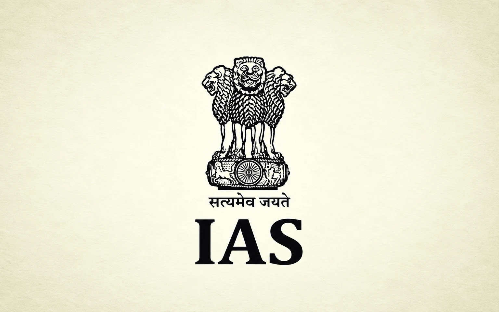

Dr. Taradatt : The Terror and the Targets
Read in book
Dr. Taradatt is a much discussed name in Odisha Administration. He was famous as Terror Datt among his subordinates. He has himself mentioned about it in his own autobiography: Highlander’s Plain Speak published about two years back. He hailed from a remote village of Uttarakhand, did his master’s and Ph.D. from BHU, and joined IAS in 1983. He was allotted to Odisha cadre, the State to which his better half belonged. In fact, he got married to his classmate in BHU Dr. Indulata Das from Balasore and it was a strange coincidence for him to join Odisha Administration.
He was a very committed person, proactive, hardworking, honest, unsparing, outspoken, upright, and down to earth. At the same time, he was very restless and ruthless in implementing his scheme of things. Anybody not falling in line was bound to incur his displeasure and at times punishment. He was a scholar in Sanskrit and had fair knowledge of Odia language. Even he used to write articles in Odia and speak fluently in Odia quoting from Odia texts. His wife joined as a lecturer in Sanskrit and voluntarily retired as a reader under the Higher Education Department.
I developed personal contact with him once he was posted as Commissioner of Commercial Taxes in 2005. Then I was looking after the Commercial Taxes branch in the Finance Department and therefore we had frequent interactions. That was the year VAT was introduced in the State and it was a transition year. His positive contributions were to create circle offices in all districts, creating more than three hundred posts of Inspectors at the field level, creating about two hundred OFS posts at the base level, fast tracking the promotions at different levels pending for years, improving the working environment in the offices and construction of the Banijyakar Bhawan in Cuttack. He was very sympathetic towards settling the personal claims of the staff and even on one occasion met the Chief Justice of the High Court to get the arrear salary of a senior officer paid who was earlier working as FA in the High Court.
On the other hand he was very concerned about the evasion of revenue by the traders and the inefficiency of the officers to arrest it. He fixed targets for registration of unregistered traders and ensured collection of taxes as per the targets fixed. He wasn’t tolerating any laxity and never hesitated to reprimand the officers in public, putting them to tears.
On one occasion after his inspection of a circle office in western Odisha, the circle head suffered a heart attack being unable to digest the humiliation. On another occasion one officer came to me in tears requesting me to take care of his family since he was suffering from high blood pressure and high blood sugar due to the daily doses of abuse from the Commissioner. I arranged to bring him to work under me as Under Secretary in the Finance Department who subsequently got promoted to IAS.
As Director of Agriculture in the past he had the reputation of putting officers on suspension on flimsy grounds and some even suffering a lot on this account. The officers of the Commercial Taxes Department were therefore on toes to meet his expectations and resorted to novel ways to satisfy him. Many fake dealers got registered by the officers to show more number of registration.
Similarly, the officers arranged to collect advance taxes from the dealers as much as upto six months in advance to show that they had achieved the targets. Although he claimed to have achieved a record 35% growth during the year, it was a double jeopardy for the State since the State lost VAT compensation from the central government on this account. Then I had prepared a detailed note on this issue but the then Finance Secretary advised me to take it back since it would have been embarrassing later as a part of Government records. I had to oblige.
One of the incidents which attracted the attention of the media was the assessment of Bhubaneswar Club. It went to the extent that ,one morning, on his way for a walk he found a carcass and night soil dumped on his doorstep in his government quarters in the Forest Park area and the trees were cut from the trunk. The Club was then headed by a very powerful IAS officer known for his flamboyance. A public notice was put in the Club debarring entry into the club premises for the OFS officers and Dr Taradatt.
As General Secretary of the OFS Association I condemned the incident in the press and extended our solidarity with him. He also reported the matter to the Chief Secretary and the police about the incident but the case was closed as – fact true, no clue. He has given a vivid account of this incident in his autobiography.
On another occasion, I was sitting in his office chamber along with some senior officers. A telephone call came to him. He talked in Sanskrit. We were a bit surprised. It was his wife on the other side. Then he narrated the story himself. Once while he was posted in Delhi, his wife went there to attend a seminar in NCERT.
In the evening when he came back, he found her in a depressed mood. On being asked she revealed that there was an attempt to discontinue Sanskrit in the school syllabus by some elements in the Government. Instantly he suggested to her to promise that henceforth both of them talk in Sanskrit only so that Sanskrit could live in India till their last breath. Thereafter they continued to stand by the pledge and talk to each other in Sanskrit.
One day when he was Secretary of SC & ST Welfare Department his private secretary telephoned me and asked for my residential address. I was surprised. It was revealed that his son’s marriage was fixed and he wanted to invite me. I was amused. But within the next few days one day he rushed into my office chamber and handed over the invitation with regrets for not being able to come to my residence.
He requested me as an old friend to bring the family for the reception and without any gift. I honored his words and it was indirectly an honor for me. The reception was very simple and purely vegetarian in his own style. It reminded me of an occasion when I visited his house. He was about to prepare Khichdi for his lunch himself since he didn’t have any cook or office peon engaged in his residence.
He was a pure vegetarian and led a very humble life true to his principles. The last call I got from him before the release of his autobiography with a request to attend the book release function. Although I missed the occasion, he was very pleased to find that I had already got the copy from Amazon and read it before it’s formal release. A person is like a moon having a darker side and a brighter side. He had glaringly the both in him.
Leave a thought
No account needed. Your name and comment appear publicly after approval.